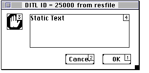

| TOP | UP: Interface | NEXT: Menus and Suites |
This chapter describes the ways in which UserTalk lets your script communicate with the user through status messages and dialogs. Frontier comes with a number of modal dialogs ready for scripts to display. It is also possible to make your own custom dialog, modal or non-modal, which can interact with the user. A custom dialog may be constructed either as a resource or in a graphical dialog-editing environment (MacBird).
There are three standard dialog window types. A modal dialog brings all action to a halt, and makes it impossible to click away to another window until the user dismisses it. Movable modal dialogs behave like modal dialogs, but they can be dragged by their titlebar, and they permit the user to switch to another application. Modeless dialogs are like ordinary windows.
A windoid is an ordinary window with a slightly peculiar appearance; for instance, its titlebar is unusually thin. The Quick Script window is a windoid.
On ordinary windows, including modeless dialogs, see Chapter 24, Windows.
A status message is brief informational text, not requiring any response, that a script posts to an existing window while continuing its activity; the text remains until explicitly removed or replaced by a new message. The Main Window is very commonly used as a destination for status messages. But there is also a status message area at the bottom of every edit window.
On the Main Window, see Chapter 24; and, on agent script messages in the Main Window, see Chapter 27, Agents and Hooks. For another way of providing feedback to the user, see on rollBeachBall() in Chapter 46, Verbs.
To display a status message in the Main Window:
msg (string)
To display a status message in the frontmost visible window:
window.msg (string)
msg() does not bring the Main Window to the front, because a status message shouldn't make the wrong window frontmost or obscure the user's view of other things. Still, it might be desirable to maximize the chances of the user seeing status messages. One possible approach is this: as a script starts, place the Main Window in the upper corner of the screen and behind whatever window is window.frontmost(), as in the following example.
But even this does not guarantee that the Main Window is unobscured.
Another possibility is to display the status message with window.msg(), which writes to the status message area of the window that is actually frontmost - not necessarily the one returned by window.frontmost(). Thus the message will almost certainly be visible. A window's status message turns invisible when the window is not frontmost, but reappears when it is made frontmost again.
A variety of ready-to-roll modal dialogs are available in UserTalk.
To display an alert modal dialog:
dialog.alert (text)
To display an informational modal dialog:
dialog.notify (text)
To display a confirmation modal dialog:
dialog.confirm (text)
To display a yes-or-no modal dialog:
dialog.yesNo (text)
To display a two-button modal dialog where you determine the button names:
dialog.twoWay (text, OKbutton, cancelButton)
To display a yes-no-or-cancel modal dialog:
dialog.yesNoCancel (text)
To display a three-button modal dialog with custom button names:
dialog.threeWay (text, yesButton, noButton, cancelButton)
To display a modal input dialog:
dialog.ask (text, addrResult)
To display a modal integer input dialog:
dialog.getInt (text, addrResult)
To display a modal password dialog:
passwordDialog.run (addrName, addrPassword)
To display the database-entry creation modal dialog:
table.promptNewItem (newWhat, dataType)
Four modal dialogs let the user choose from files, folders, or volumes. Nothing happens to any files directly as a result of these dialogs; the dialogs just return a pathname, which the script may use as desired. Except for file.getDisk-Dialog(), these are familiar standard Mac OS dialogs. For more about file pathnames, see Chapter 31, Driving the System; for string verbs that manipulate pathnames, see Chapter 14, Strings and Chars.
To let the user choose a file:
file.getFileDialog (text, addrResult, fileTypes)
To let the user choose a folder:
file.getFolderDialog (text, addrResult)
To let the user choose a volume:
file.getDiskDialog (text, addrResult)
To let the user specify a folder and enter a filename:
file.putFileDialog (text, addrResult)
Another standard Mac OS modal dialog, the PPCBrowser, lets the user choose from applications running on the local (AppleTalk) network. There is no need to be logged into any of the other computers, and choosing an application does not actually link to it; there is no need to supply any passwords. But only processes on computers with program linking turned on will be visible.
To let the user choose a running process:
sys.browseNetwork (text, creatorCode, addrResult)
The value returned by sys.browseNetwork() at addrResult can be used subsequently to address communications to the chosen process; see Chapter 32, Driving Other Applications.
A purely informational dialog tells things like the size, creation and modification dates, and type and creator of a file; basically, it's a more informative version of the Finder's Get Info dialog. It's hard to imagine this being used in a script; rather, it's the sort of thing one might use while writing a script.
To display the file info dialog:
dialog.fileInfo (pathname)
You can create your own dialog layout as a 'DLOG'/'DITL' resource pair with a resource editor such as ResEdit.1 Such resources, if present in the resource chain, can be displayed as a dialog with a call to dialog.run() (to display a modal dialog) or dialog.runModeless() (to display a modeless dialog). On resources, see Chapter 20, Resources.
One of the parameters in the call to dialog.run() or dialog.runModeless() is the address of a handler. This handler (which I will call the "proc") is called when the dialog is about to be displayed, and is called again every time the user "hits" an item in the dialog (pushes a button, for example). Each time it is called, the proc can query or make changes to elements of the dialog, as well as performing any other desired tasks; it then returns true to continue displaying the dialog, or false to close it. Thus, the proc is in complete runtime control of the user's interaction with the dialog.
The proc must accept a single parameter. Each time the proc is called, the value of this parameter tells it what's going on, as follows:
All this may sound rather daunting, but in fact writing a proc is very easy. There are several examples in the database, and more are presented later in this chapter. Before getting to that, here are the relevant verbs for operating on the dialog. One of the first two will be used to display the dialog; the others are valid only from within a proc.
To display a resource-based modal or modeless dialog:
dialog.run (resourceID, defaultItemNum, addrProc)
dialog.runModeless (resourceID, defaultItemNum, addrProc)
To change the visibility of a dialog item:
dialog.showItem (itemNum)
dialog.hideItem (itemNum)
To change the enabled status of a dialog item:
dialog.setItemEnable (itemNum, enabled?)
To obtain or change the value of a dialog item:
dialog.getValue (itemNum)
dialog.setValue (itemNum, newValue)
For our first example, we make a dialog like Frontier's dialog.confirm(), except that it has the stop-sign icon (already present in the resource chain as the 'ICON' whose ID is 0).
We will store the resources as database entries, bringing them into the resource chain just before showing the dialog. A major advantage of this strategy is that we can package in a subtable both the resources and the dialog "glue" script which the caller calls to display the dialog; this is aesthetically neat, and makes it easy to distribute the dialog to other users. We'll call the subtable stopDialog.
We start by drawing the dialog in ResEdit; in Figure 25-1, it is shown with its items numbered. Item 4, the static text of the dialog, will be set according to the parameter provided by the caller. Item 1, the OK button, will be the default.
|
 |
We assign both the 'DLOG' and the 'DITL' ID numbers of 25000, because Frontier reserves this number, by convention, for temporarily loaded resources. Make sure that the 'DLOG' is set to use 'DITL' 25000, and that Initially Visible is unchecked in the 'DLOG' edit window so that we can set item 4 before the dialog appears. Now save the dialog resources. Let's say they are saved in a file called ResFile.
We will need a utility script to import the resources. Thus, we have an edit cycle where we edit the dialog resources in ResEdit, save them, import them with our utility script, and show the dialog in Frontier, until we are satisfied with the results. The utility script might look like this:
if not defined (people.[user.initials].stopDialog)
new(tableType, @people.[user.initials].stopDialog)
local (dummy)
rez.getNthResource ("HD:resfile", 'DLOG', 1, @dummy, @stopDialog.stopDLOG)
rez.getNthResource ("HD:resfile", 'DITL', 1, @dummy, @stopDialog.stopDITL)
Our dialog glue script should obviously work like dialog.confirm(): it will take one parameter, the prompt text, and it will return false or true as the user clicks Cancel or OK. With this in mind, we can write the proc.
When first called, with a parameter of -1, the proc should set item 4 to the prompt, which we call s, and permit the dialog to be shown. Thereafter, if item 2 or item 1 is hit, it must close the dialog. To tell the script as a whole which item was hit, we use a variable global to the proc, which we call userHitOK. The proc is now complete!
Thus far, our glue script looks like this:
on run (s)
local (userHitOK = false)
on theProc(whatItem)
case whatItem
-1
dialog.setValue (4, s) « s is the prompt
return true « show the dialog
1; 2
userHitOK = (whatItem == 1)
return false « close the dialog
We've defined the proc, but the glue script doesn't yet do anything. What it should do is load the resources into the resource chain, and show the dialog with dialog.run(). This will hand control over to the proc. When dialog.run() returns, the dialog has been dismissed, and the proc has set userHitOK according to whether OK was hit. So all we have to do is return userHitOK. There is no need to remove the resources from the resource chain; we don't care if a script overwrites them later on. So now we have:
on run (s)
local (userHitOK = false)
on theProc(whatItem)
case whatItem
-1
dialog.setValue (4, s)
return true
1; 2
userHitOK = (whatItem == 1)
return false
rez.putResource (frontier.getFilePath(), 'DITL', 25000, \
@stopDialog.stopDITL)
rez.putResource (frontier.getFilePath(), 'DLOG', 25000, \
@stopDialog.stopDLOG)
dialog.run (25000, 1, @theProc)
return userHitOK
if run("Do you really want to erase your entire hard disk?")
dialog.notify("You're lucky I was just kidding.")
I have added a two-line stub so we can test the glue script. Pressing its Run button brings up the test version of the dialog, as shown in Figure 25-2.
Next, we illustrate a modeless dialog, with radio buttons for good measure. The purpose of the dialog will be to create a new non-scalar database entry. Again, we will package the glue script and the dialog resources in a subtable, which we will call entryMaker.
Figure 25-3 shows the dialog as drawn in ResEdit. Make sure to give the 'DLOG' window a title, so that it can be referred to in UserTalk with a window reference (in this case we call it "Make New Entry").
Figure 25-4 shows how the dialog will look when displayed in Frontier.
The proc has rather more to do than in our previous example, though there is nothing particularly hard about it. Management of the radio buttons is up to us, and we must also give the dialog its actual functionality, so that it really does create a new table entry.
The proc is initially called with a parameter of -1, whereupon it initializes the radio buttons and edit text. Subsequently, if one of the radio buttons is hit, we set it, remember what datatype it signifies, change the edit text to match, and clear the other radio buttons. When the OK button is hit, we check whether the window behind the dialog is a table, and, if it contains an entry with the name the user has provided, we make sure it's okay to replace it. If all is well, we create the new entry as specified.
Notice the use of dialog.setValue() and dialog.getValue() throughout, the variables global to the proc to maintain state from one call to the next, and the fact that we always return true (because closing the window is entirely up to the user).
on run ()
local (whatType = scriptType, whatName = "newScript")
local (typeList = {scriptType, wptextType, outlineType, tableType})
local (nameList = {"newScript", "newWptext", "newOutline", "newTable"})
on theProc(whatItem)
case whatItem
-1
dialog.setValue(3, true)
dialog.setValue(7, "newScript")
3; 4; 5; 6
local (x)
for x = 3 to 6
dialog.setValue (x, whatItem == x)
dialog.setValue (7, nameList [whatItem - 2])
whatType = typeList [whatItem - 2]
1
local (theTable = window.next("Make New Entry"))
if typeOf(theTable^) ≠ tableType
dialog.notify (theTable + " isn't a table.")
else
whatName = dialog.getValue (7)
if defined (theTable^.[whatName])
if !(dialog.yesNo("Replace existing "+whatName+"?"))
return true
new (whatType, @theTable^.[whatName])
return true
rez.putResource (frontier.getFilePath(), 'DITL', 25000, @entryMaker.ditl)
rez.putResource (frontier.getFilePath(), 'DLOG', 25000, @entryMaker.dlog)
dialog.runModeless (25000, 1, @theProc)
run()
In the previous examples, the resources live in the database and are loaded into the resource fork of the database file just before showing the dialog. This makes the edit cycle a two-step process, because the resources are edited in ResEdit and must then be imported into the database.
An alternative approach is to leave the resources in the ResEdit file, and then, when the time comes to display the dialog, to load the resources directly into the resource chain by calling dialog.loadFromFile() . This verb returns the ID of the 'DLOG', so you can hand the result to dialog.run() or dialog. runModeless():
dialog.run (dialog.loadFromFile ("HD:resfile"), 1, @theProc)
In fact, there is another utility script, dialog.runFromFile(), consisting essentially of this very line.
This approach shortens the edit cycle: edit the resources in ResEdit, save the resource file, and display the dialog in Frontier immediately. The disadvantage is that now you have an extra file without which the dialog won't work; keeping the resources in the database is neater and makes it much easier to distribute your dialog to other users.
Frontier comes with MacBird, a separate application for drawing and displaying dialogs; and MacBird Runtime, which displays dialogs, is built directly into Frontier. This cuts out the need for ResEdit (because the dialog is drawn with MacBird), the need to move resources into the database (because MacBird edits database entries), and the need to move the resources into the resource chain (because MacBird Runtime displays the dialog). Furthermore, instead of using a proc, programmatic management of items in the dialog is object-oriented: scripts are attached directly to the dialog items themselves, to dictate their behavior when they are "hit."
The dialog that MacBird draws is called a card ; it is stored in the database as a binary of type 'CARD', referred to as a card object. That's why these are called card-based dialogs.2
As of this writing, MacBird Runtime,3 which is responsible for the display of card-based dialogs from within Frontier, appears to be quite reliable. MacBird as a dialog construction tool, though, is unfinished and a bit shaky (certain actions consistently crash my machine). Still, it's easy and fun to use; just be sure that as you edit a dialog you save your work often.
You create a new card object in the database by choosing New Card from the Table menu. You edit the card graphically in MacBird by selecting the card object and choosing Edit with App from the Main menu; later, in MacBird, when you save the card, it is saved back into the database, updating the card object.4 You display a card as a dialog from within Frontier by calling card.run(); or, for testing purposes, select the card object and choose Run Selection from the Main menu.
Editing a MacBird card graphically is very intuitive.5 The meanings of the icons in the editor are (top to bottom, by row): selection tool and text editing tool, non-editable and editable text field, checkbox and radio button, button, popup menu, icon, picture, rectangle, color-picker button, labelled rectangle, and scrollbar. This tool set can be extended; see the Frontier SDK for instructions.
The radio button tool needs a bit of explanation. As you add radio buttons, they are linked with the already present radio buttons; to start a new set of radio buttons, "group" the existing radio buttons so that MacBird won't see them.
You can cancel out of a running card with Command-period (useful if things go wrong, or if you want to test a dialog before the card has scripts which close it).
When you work with a card from within MacBird, it contains three primary sorts of things. First, there are the items of the dialog, the buttons and text fields and such, usually referred to as objects, which you draw and edit as graphics.
Second, there are scripts associated with each object in the card. These are of two kinds. A button can have an action script ; this is accessed by choosing Button Info from the Object menu. The action script runs when the button is pressed. And any dialog item can have a recalculation script ; this is accessed by selecting the item and choosing Recalculation from the Object menu. A recalculation script runs in response to an external event: when first starting up the card, or when another object in the card is changed, or at preset intervals of time; the object's value is set to the result of the script.
Both recalculation scripts and action scripts are dynamically scoped: they are considered, while running, to exist at the point where card.run() was called. This means that they have access to variables and handlers that are in scope at that point of the calling script, making it possible to share information between the calling script and the card scripts.
Third, there is the card's table (which I'll call the "card-table"). This is a Frontier table embedded in the card's data; to access it, you choose Edit Table from the Edit menu in MacBird, which switches to Frontier to display the table.6 The recalculation scripts and action scripts have an implicit with to this table; so they can access scripts and other objects that are stored there. Indeed, it is common to make recalculation scripts and action scripts mere one-liners that call card-table scripts. Scripts in the card table also have an implicit with to other objects in the card-table; but they do not have access to variables and handlers in scope in the caller at the point where card.run() was called.
If the card-table contains a menubar object called menubar, and if the dialog is modeless, the menubar will appear at the top of the screen whenever the dialog is frontmost. If a script in the card-table, or a handler in scope in the caller, has the name startCard, it is called automatically before the dialog becomes visible.
Since objects in the card-table are visible to action scripts, to recalculation scripts, and to card-table scripts, the card-table can be used as a kind of global storage while the card is running. But this is not persistent storage. When card.run() is called, a copy of the card-table within the card object is created temporarily in the database; this copy is not saved back into the card object, so any changes made in the card-table are lost when the card closes. Also, because it is impossible to form an object reference to the card-table, it is impossible for a script to create a new object in it.
The card verbs are not well documented. Fortunately, most of them are identical to the corresponding cardEditor verbs, which are documented (in DocServer). And it is easy to find out what the card verbs are, by looking in system.verbs.app.card. For example, to learn about card.getCardGrid(), read about cardEditor.getCardGrid() in DocServer.
The vast majority of card verbs are seldom used (and several are not meant to be used directly at all). Here, only the commonest are discussed. Only card.run() requires that the card object be specified; the others are valid only from within card scripts, and apply automatically to the card in which they live or from which they are called.
To display a card-based dialog:
card.run (addrCardObject)
To close a displayed card-based dialog:
card.close ()
window.close (windowRef )
window.close() is the way to close modeless dialogs, which are ordinary windows.
To learn whether a card is modal:
card.isModal ()
To learn or set the enabled status of a dialog item:
card.getObjectEnabled (objectName)
card.setObjectEnabled (objectName, enabled?)
To learn or set the visibility of a dialog item:
card.getObjectVisible (objectName)
card.setObjectVisible (objectName, visible?)
To learn or set the boolean status of a dialog item:
card.getObjectFlag (objectName)
card.setObjectFlag (objectName, boolean)
To learn or set the text of a dialog item:
card.getObjectText (objectName)
card.setObjectText (objectName, string)
To learn or set the menu item list of a popup menu:
card.popup.getMenu (objectName)
card.popup.setMenu (objectName, string)
To learn or set the visibility of a popup menu's title:
card.popup.getHasLabel (objectName)
card.popup.setHasLabel (objectName, visible?)
To learn or set which menu item of a popup menu is chosen:
card.popup.getCheckedItem (objectName)
card.popup.setCheckedItem (objectName, itemNumber)
card.popup.getSelectedText (objectName)
card.popup.setSelectedText (objectName, itemText)
To illustrate, we rewrite our earlier resource-based examples as MacBird cards. We start with our stop-sign dialog. We'll need a glue script and a card object. We'll call the glue script run() and the card object stopCard, and we'll keep them in a subtable called stopDialog2.
First, recall how we're going to want to call the dialog; the glue script needs to work like dialog.confirm(), taking as parameter a string which is the dialog's prompt, and returning true or false as the user clicked OK or Cancel. So here is the glue script:
on run (s)
local (result)
card.run (@stopDialog2.stopCard)
return result
if run("Do you really want to erase your entire hard disk?")
dialog.notify("Lucky for you I was just kidding.")
Now s and result, our local variables, will be available to the card's recalculation and item scripts while it runs. Keeping this mind, Figure 25-5 shows our stop-sign dialog drawn in MacBird.
The dialog contains four items: an icon, a non-editable text, the Cancel button, and the OK button. The non-editable text has a recalculation script which runs on card startup and says simply:
s
The Cancel button has an action script, which says:
card.close(); result = false
The OK button has an action script, which says:
card.close(); result = true
That's all! The non-editable text says ERROR when we edit the card within MacBird, because there is no context in which to understand s; but if we click stopDialog2.run()'s Run button to test the dialog, we see the dialog shown in Figure 25-6.
The "Make New Entry" dialog is much like our resource-based version, except that the pieces of the action, instead of being distributed over callbacks to a proc, are distributed over various recalculation and action scripts, and instead of communicating with one another through variables global to the proc, they communicate with one another through entries in the card-table. One major difference is that in the card-based version, we don't have to manage the highlighting of the radio buttons: that's taken care of for us.
Let's name the card object entryMaker2. It needs to be designated as modeless. It is clear how to draw it in MacBird; Figure 25-7 shows the dialog in action, when card.run(@entryMaker2) has been called.
For simplicity, the radio buttons have item names identical to their titles: "Script", "Wptext", "Table", and "Outline". The editable text field is named "editText", and has a recalculation script which is triggered when another item changes; the recalculation script calls setEditText(), which is in the card-table. The OK button has an action script which calls makeNewEntry(), also in the card-table.
The card-table contains five items. We have just met two of them: the scripts setEditText() and makeNewEntry(). There is also a boolean, okPressed, and a string4, whatType. These will allow the scripts to communicate with one another. Finally, there is a startCard() script, which says:
okPressed = false
The reason for this is that a recalculation script triggered a change in another item has no way of knowing what item was changed. We want the editable text to change when a radio button is pressed, but not when the OK button is pressed. So we use okPressed as a flag, to tell the recalculation script when to change and when not.
Here is setEditText(): remember, this is called by the editable text field's recalculation script every time the user clicks a button, and its result becomes the text of the text field:
local (x, buttonNames = {"Script", "Table", "Wptext", "Outline"})
local (typeList = {scriptType, tableType, wptextType, outlineType})
if okPressed
okPressed = false
return card.getObjectText("editText")
for x = 1 to 4
if card.getObjectFlag(buttonNames[x])
whatType = typeList[x]
return "new" + (buttonNames[x])
When the user presses the OK button, okPressed is set to true by the OK button's action script; so in order to keep the editable text field from changing its text, setEditText() returns its current text! If the user presses a radio button, that button highlights and the other radio buttons are unhighlighted, automatically; now we check each radio button to find which one is highlighted, and use the result to set whatType and the text of the editable text field.
Finally, here is makeNewEntry(), called when the user presses the OK button:
local (theTable = window.next("Make New Entry"))
if typeOf(theTable^) ≠ tableType
dialog.notify (theTable + " isn't a table.")
else
local (whatName = card.getObjectText("editText"))
if (!defined (theTable^.[whatName])) \
or (dialog.yesNo ("Replace existing " + whatName + "?"))
new (whatType, @theTable^.[whatName])
okPressed = true
This is almost identical to the proc of the resource-based version; the chief difference is a slight rearrangement so that the very last thing we do, regardless of the execution path, is set okPressed to true, so that setEditText() won't change the value of the editable text field.
One dialog, frontier.requestToFront() , is specifically designed to appear in another application, as a way of telling the user that Frontier requires attention.
Other Frontier dialogs, except those called with dialog.runModeless(), can appear in other applications, provided they are called in threads initiated in the context of other applications; see Chapter 26, Menus and Suites, on shared menus. But when execution is initiated from within Frontier, if it is desired to bring another application to the front and then display a Frontier dialog in that application, there seems no general way to do it.
An alternative, if you have AppleScript on your machine, is to have it display one of its dialogs (using, for instance, the display dialog command) from within another application; see Chapter 33, AppleScript. This works even if the other application is not scriptable. For example, given the utility in Example 33-1, one can say:
sys.bringAppToFront("SimpleText")
doAsAppleScript("tell application \"SimpleText\" to display dialog " + \
"\"Hello from Frontier!\"")
1. For more information about using ResEdit, see http://devworld.apple.com/dev/techsupport/insidemac/resedit/resedit-2.html. For more information about elements of dialogs, see http://devworld.apple.com/dev/techsupport/insidemac/Toolbox/Toolbox-297.html and http://devworld.apple.com/dev/techsupport/inside-mac/Toolbox/Toolbox-370.html. In our examples, a 'DLOG' and 'DITL' are the only needed resources; if your dialog uses icons or controls or other resources that aren't in the resource chain already, you will have to get them into the resource chain just as we do here with the 'DLOG' and 'DITL'.
2. Possibly the "card" designation is homage to HyperCard. As for MacBird's name, some of us go back far enough into the '60s to remember what MacBird was, and the Texan boot used as an icon is a dead giveaway; but the name is actually said to be derived from a similar project (at another company) that was code-named "Blackbird."
4. The mechanism of this symbiotic relationship between MacBird and the database is explained in Chapter 35, External Editors.
5. There is a tutorial at http://www.wrldpwr.com/frontier/macbird/index.html.
| TOP | UP: Interface | NEXT: Menus and Suites |